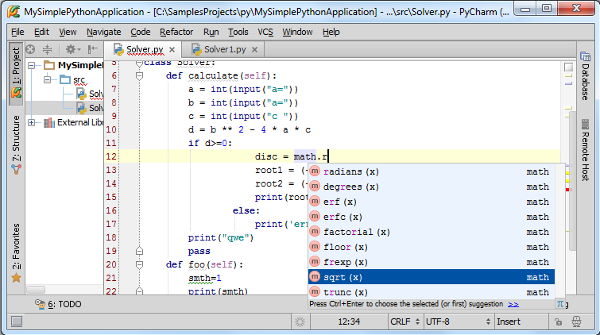
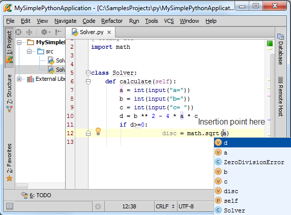
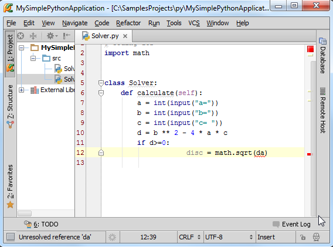
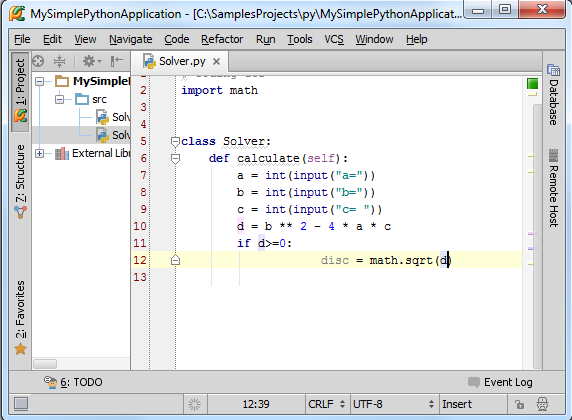
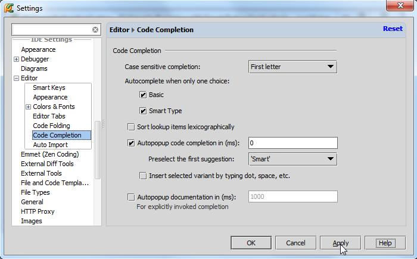

1、主题
之前我们已经在Getting Started Guide接触了代码拼写提示这一帮助功能，这里我们将详细的介绍它。
拼写提示就是以列表的形式给出当前位置下可用的单词（函数名、类名、变量名等）。
2、启用拼写提示功能
在任何情况下我们都可以通过Ctrl+Space快捷键来启动拼写提示功能。
事实上，拼写提示功能在你输入代码的过程中是默认启动的，当然也包括输入点号之后的域成员提示功能。当你继续输入时，拼写提示列表会缩小范围以匹配你输入的字符。由此可将，拼写提示功能也是相对智能的，会在任意位置匹配当前已输入的字符串以供用户选择：

当然如果你想关闭拼写提示功能，可以通过Ctrl+Alt+S → Settings → Editor → Code Completion命令打开拼写提示功能对话框，取消Autopopup code completion in (ms)复选框的勾选即可。
3、如何使用拼写提示列表
使用鼠标指针或者up/down键在拼写提示列表中选择期望输入的名称：

这里你可以通过right/left键来调整拼写列表的宽度。
然后你就需要将选中的名称插入到当前位置，Pycharm提供了两种插入方法：
（1）按下回车，对应变量会添加到当前光标的位置：

（2）按下Tap键，选中的名称会替换掉当前光标右侧的字符串：

4、拼写提示功能更改
按下Ctrl+Alt+S打开设置对话框，展开Editor节点，单击 Code Completion页：

如你所见，Pycharm允许我们对拼写提示功能做各种各样的更改以满足需求，如果你不清楚某些选项的具体功能，单击Help按钮获取帮助信息。
更多拼写提示功能相关信息参见this link。